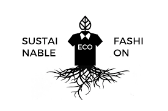
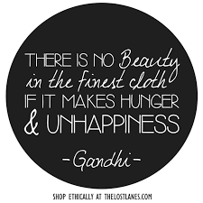

ECOFITS
What is the first thing you think about when you hear "sustainable fashion"?
WHAT IS SUSTAINABLE FASHION?
Keyword is 'sustainable' which correlates with the word 'sustainability'. Different methods like like thrifting and customising old clothes are good ways to create sustainable clothing, while on a budget.
Have you ever wondered what actually goes into the manufacturing of your clothes? Non-organic cotton crops need more and more pesticides (or stronger pesticides) because the pests build up a tolerance, bet you didn't know that.
Choosing organic cotton, reduces the use of pesticides & slows down that scary pesticide snow ball effect. It also takes less water (71% less!) and less energy (62% less!) to grow organic cotton than it does to grown non-organic cotton.

Be apart of my movement and join us in really making this world a better place.
